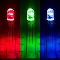

Notification Device Configuration¶
ArduPilot provides the ability to notify users visually and/or aurally, of important status information and warnings. These can be provided on-board or externally via several types of devices: single color LEDs, RGB LEDS, OLED displays, and Buzzers.
LED and LED Display Configuration¶
LED indication meanings are explained in the LEDs Meaning section.
In order to use any of these, they must be selected using the NTF_LED_TYPES bitmask for which devices are being used in the system:
Bit |
Bit Meaning |
0 |
Built in LED(s) (always on-board) |
1 |
Internal ToshibaLED |
2 |
External ToshibaLED I2C |
3 |
External PCA9685 on I2C |
4 |
Oreo LED (Solo specific) |
5 |
DroneCAN |
6 |
NCP5623 External I2C |
7 |
NCP5623 Internal |
8 |
NeoPixel string ** |
9 |
ProfiLED |
** Neopixel strings are attached via an output selected to have one of the Neopixel SERVOx_FUNCTIONs. Up to four outputs can be designated for Neopixel strings.
The brightness of the LEDs can be controlled via the NTF_LED_BRIGHT parameter.
OLED Displays¶
In addition, two I2C connected OLED Displays are supported which display key autopilot status and status text messages: SSH1106 and SSD1306 compatible displays. These will display the text messages normally sent to a Ground Control Station, as well as some status information.

These are enabled via the NTF_DISPLAY_TYPE parameter.
BUZZER¶
Buzzers can provide aural indications of status and warnings. Examples for a external piezo buzzer used with a Pixhawk are given here.
Several parameters are associated with buzzers for configuration and are detailed in the Buzzer (aka Tone Alarm) section.